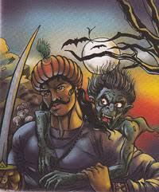

રાજા વિક્રમાદિત્ય બેતાલ લેવામાં ઘણી વખત નિષ્ફળ ગયો, પરંતુ તેણે હાર ન માની.
આ વખતે પણ તેણે બેતાલને ખભા પર ઊંચકીને આગળ વધવાનું શરૂ કર્યું.
દર વખતની જેમ આ વખતે પણ બેતાલે રાજાને એક નવી વાર્તા કહી.
જાણો શું હતી તે વાર્તા અને રાજાએ બેતાલના વાર્તા સંબંધિત પ્રશ્નનો શું જવાબ આપ્યો.
 એક સમયે ઉજ્જૈન શહેરમાં એક રાજાનું શાસન હતું. તેમનું નામ વીરદેવ અને રાણીનું નામ પદ્મ હતું.
બંનેને એક પુત્રી રૂપમતી હતી. એકવાર રૂપમતી તેના મિત્રો અને મંત્રીઓ સાથે રાજ્યની આસપાસ ફરવા નીકળી હતી.
હરવા-ફરવાની સાથે તે પોતાના વિષયોને કેટલીક ભેટ પણ આપતી હતી. આ દરમિયાન એક વ્યક્તિએ રાજકુમારીને એક સુંદર સાડી ભેટમાં આપી.
એ સાડી જોઈને રાજકુમારી ખૂબ ખુશ થઈ.
એક સમયે ઉજ્જૈન શહેરમાં એક રાજાનું શાસન હતું. તેમનું નામ વીરદેવ અને રાણીનું નામ પદ્મ હતું.
બંનેને એક પુત્રી રૂપમતી હતી. એકવાર રૂપમતી તેના મિત્રો અને મંત્રીઓ સાથે રાજ્યની આસપાસ ફરવા નીકળી હતી.
હરવા-ફરવાની સાથે તે પોતાના વિષયોને કેટલીક ભેટ પણ આપતી હતી. આ દરમિયાન એક વ્યક્તિએ રાજકુમારીને એક સુંદર સાડી ભેટમાં આપી.
એ સાડી જોઈને રાજકુમારી ખૂબ ખુશ થઈ.
તેણે તે માણસને પૂછ્યું, “તમે આ સાડી ક્યાંથી ખરીદી? આ સાડી ખૂબ જ સુંદર છે.” દરમિયાન, રાજકુમારીના મંત્રીએ કહ્યું,
“તેણે આ સાડી જાતે બનાવી છે. તે એક મહાન કલાકાર છે.” મંત્રીએ જે કહ્યું તે સાંભળીને રાજકુમારીને આશ્ચર્ય થયું.
રાજકુમારીએ પુરુષ દ્વારા વણાયેલી અન્ય સાડીઓ અને કપડાં જોવાની ઈચ્છા વ્યક્ત કરી. તે માણસ ખૂબ જ ખુશ હતો અને તેણે રાજકુમારીને તેના ઘરે આમંત્રણ આપ્યું.
રાજકુમારીએ આમંત્રણ સ્વીકાર્યું અને તેના ઘરે જઈને ઘણા કપડાં જોયા.
તેણી ખૂબ જ ખુશ હતી અને કહ્યું, "મને અહીં રહીને તમારી પાસેથી આ કારીગરી શીખવાનું મન થાય છે.
" એમ કહીને રાજકુમારી ફરી પોતાની યાત્રા પૂરી કરવા નીકળી પડી.
રાજકુમારી હમણાં જ આગળ વધી હતી જ્યારે એક માણસ આગળથી આવ્યો અને તેણે રાજકુમારી અને તેના મિત્રોને કહ્યું કે આગળ ઝાડ નીચે સિંહ છે.
રાજકુમારીને આશ્ચર્ય થયું અને તેણે માણસને પૂછ્યું, “તને કેવી રીતે ખબર પડી? તેં જોયું છે?” માણસે કહ્યું, "ના રાજકુમારી, મારા પક્ષી મિત્રએ મને માહિતી આપી છે.
" રાજકુમારી ફરીથી આશ્ચર્યચકિત થઈ ગઈ અને પૂછ્યું, "શું તમે પક્ષીઓ સાથે વાત કરો છો?"
તો વ્યક્તિએ જવાબ આપ્યો કે તે પક્ષીઓ, પ્રાણીઓ અને પાણીમાં રહેતા જીવોની ભાષા જાણે છે.
રાજકુમારી આ સાંભળીને ખૂબ ખુશ થઈ અને તેણે પક્ષીઓ અને પ્રાણીઓની ભાષા શીખવાની ઈચ્છા વ્યક્ત કરી અને તેને મહેલમાં આવવા આમંત્રણ આપ્યું.
માણસે કહ્યું કે આ પક્ષીઓ અને પ્રાણીઓ તેનો પરિવાર છે, તેઓ મહેલમાં કેવી રીતે આવી શકે. તેથી રાજકુમારીએ તેની વાતને મંજૂર કરી અને કહ્યું,
"જો તેણીને ભવિષ્યમાં ક્યારેય તક મળશે, તો તે પોતે આ ભાષા શીખવા માટે તેની પાસે આવશે." આટલું કહી તે આગળ વધ્યો.
યાત્રા લાંબી હતી. મુસાફરી દરમિયાન, રાજકુમારીની તબિયત બગડવા લાગી.
રાજકુમારીને વિધવા પાસે લઈ જવામાં આવી. ઉમરાવોએ રાજકુમારીને તેની જગ્યાએ આરામ કરવા કહ્યું અને તેણીને જડીબુટ્ટીઓ આપી.
તે દવા લીધા પછી રાજકુમારી થોડા કલાકોમાં સ્વસ્થ થઈ ગઈ. રાજકુમારીએ ઉમરાવનો આભાર માન્યો.
ત્યાં બેઠેલા અન્ય દર્દીઓએ રાજકુમારીને વૈદ્ય વિશે ઘણી બધી વાતો કહી, તેઓ કેવી રીતે દરેકની સેવા કરે છે અને તેમની દવાઓથી કેટલા લોકો સાજા થયા છે.
આ બધું સાંભળીને રાજકુમારીએ વૈદ્યને કહ્યું, “તમે બહુ સારું અને પુણ્યનું કામ કરો છો. મને પણ એ જ રીતે બીજાની સેવા કરવાનું મન થાય છે.”
પછી રાજકુમારી તેની યાત્રા પૂર્ણ કરવા નીકળી પડી. તે થોડે દૂર ગઈ હતી જ્યારે તેનો પગ પ્રાણીઓ માટે બિછાવેલી જાળમાં ફસાઈ ગયો હતો.
રાજકુમારી મદદ માટે ચીસો પાડવા લાગી. તેના મિત્રો અને મંત્રીઓએ પણ મદદ માટે ફોન કરવાનું શરૂ કર્યું.
તે દરમિયાન, એક બહાદુર માણસ, તેની શાણપણ અને તીરંદાજીથી, રાજકુમારીને જાળમાંથી બહાર કાઢ્યો.
રાજકુમારી ખુશ થઈ અને હીરોનો આભાર માન્યો. તેણીએ પણ તેને ફરીથી મળવાની ઈચ્છા વ્યક્ત કરી અને ત્યાંથી નીકળી ગઈ.

આ પછી રાજકુમારી લાંબી મુસાફરી કરીને મહેલમાં પાછી આવી. ઘરે પાછા ફર્યા પછી,
રાજાએ તેને કહ્યું કે નજીકના રાજ્યોમાંથી રાજાઓ અને રાજકુમારોના સંબંધો આવવા લાગ્યા છે.
રાજકુમારીએ તેના પિતાની વાત સાંભળી અને કહ્યું કે તેને રાજા કે રાજકુમાર નહિ, પણ સામાન્ય માણસ જોઈએ છે.
તેણે તેના પિતાને કહ્યું, “આ પ્રવાસ દરમિયાન મને જાણવા મળ્યું કે સામાન્ય લોકો પણ ખૂબ જ જાણકાર, મહેનતુ અને મહાન હોય છે.
તેથી, હું મારા જીવનસાથી તરીકે એક સામાન્ય વ્યક્તિને ઇચ્છું છું. રાજાએ પુત્રીની સલાહ સ્વીકારી અને સ્વયંવરની જાહેરાત કરી.
તે સ્વયંવરના સમાચાર ચાર વ્યક્તિઓ સુધી પણ પહોંચ્યા જેમને રાજકુમારી મુસાફરી દરમિયાન મળી હતી.
ચારેય જણ રાજકુમારીના સ્વયંવર પાસે પહોંચ્યા. વાર્તા અહીં સુધી પહોંચી હતી જ્યારે દર વખતની જેમ,
બેતાલે વાર્તામાં વિક્ષેપ પાડ્યો અને વિક્રમને પ્રશ્ન પૂછ્યો. બેતાલે પૂછ્યું, “રાજકુમારીની સામે ચાર વરરાજા હતા,
એક કપડા બનાવનાર કલાકાર, એક ભાષા નિષ્ણાત, એક માન્ય માણસ અને એક બહાદુર.
હવે મને કહો કે રાજકુમારી માટે શ્રેષ્ઠ વર કોણ હતો? રાજકુમારીએ કોના ગળામાં સ્વયંવરની માળા પહેરાવી? મને જલ્દી કહો નહીં તો હું તારું માથું તોડી નાખીશ.
રાજા વિક્રમે જવાબ આપ્યો, “કલાકાર તો બહુ ધનવાન હતો, પણ રાજકુમારી પાસે ધનની શું કમી છે?
તેથી, રાજકુમારી કલાકાર પસંદ કરશે નહીં. તે જ સમયે, બીજી વ્યક્તિ જે ભાષા જાણે છે તે મનોરંજન માટે યોગ્ય છે.
ત્રીજા છે વૈદ્ય, જે એક સારા વ્યક્તિ છે, સમાજની સેવા કરે છે.
જો તેની તુલના તે બહાદુર માણસ સાથે કરવામાં આવે, તો રાજકુમારી ફક્ત બહાદુર માણસને જ પસંદ કરશે.
રાજાને કોઈ પુત્ર નથી, તેથી માત્ર એક બહાદુર જમાઈ જ રાજ્યનું રક્ષણ કરી શકે છે. તેથી, રાજકુમારી માટે શ્રેષ્ઠ વર એ બહાદુર માણસ છે.
વિક્રમની વાત સાંભળીને બેતાલ ખુશ થઈ ગઈ, પણ દર વખતની જેમ વિક્રમ બોલતાની સાથે જ બેતાલે ફરી જઈને ઝાડ પર ફાંસો ખાઈ લીધો.
સારાંશ :
જો તમને તક મળે, તો તમારે ચોક્કસપણે એક બહાદુર અને બુદ્ધિશાળી વ્યક્તિને તમારા જીવનનો ભાગ બનાવવો જોઈએ